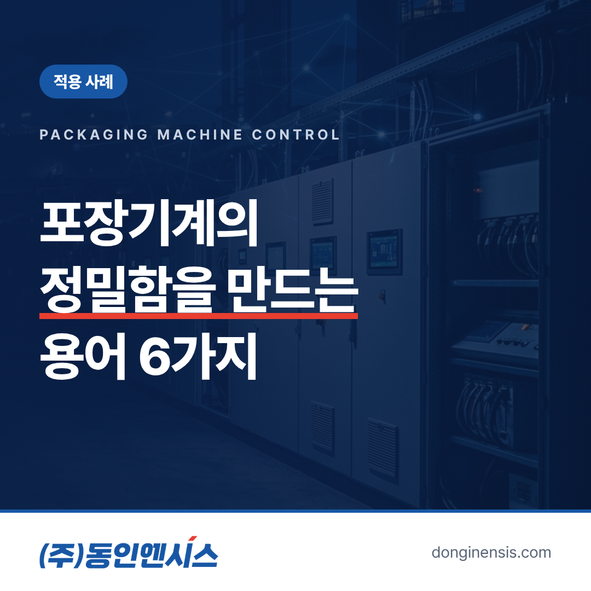
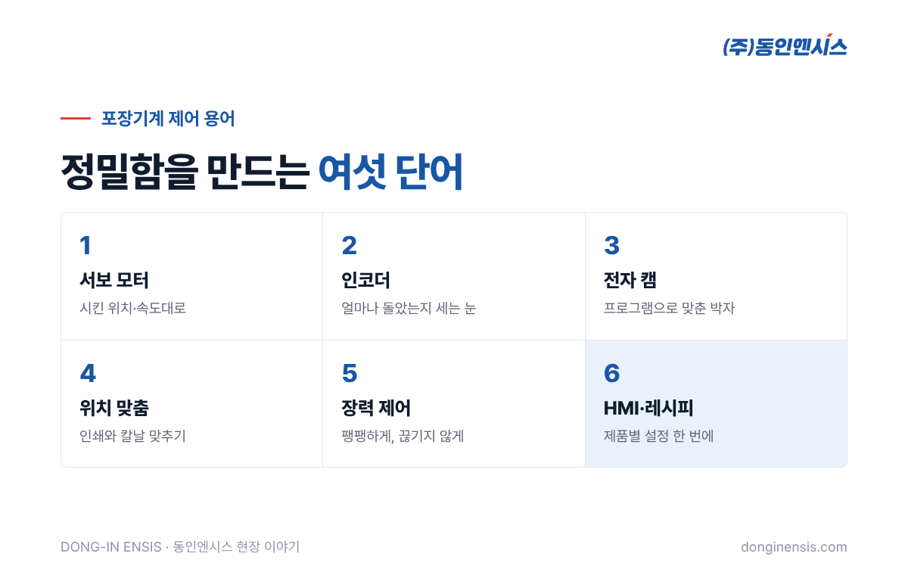
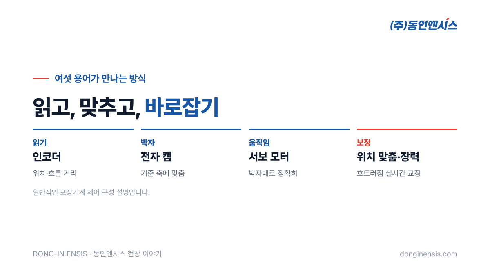

마트에서 집어 드는 과자 상자, 화장품 케이스, 약 포장지. 상자의 접는 선이 정확히 맞고 인쇄가 칼처럼 잘려 있는 것은 우연이 아닙니다. 포장재를 만드는 기계가 1초에도 여러 번, 같은 위치에서 같은 동작을 반복하기 때문입니다. 부산에서 30년 넘게 산업 설비의 제어반을 만들어 온 동인엔시스가 맡았던 현장 가운데에는 밥스트코리아(BOBST)의 포장기계 제어시스템도 있습니다. 이 경험을 바탕으로 포장기계 제어에서 자주 쓰이는 용어 여섯 가지를 쉽게 풀어 보겠습니다. 처음 포장 설비를 맡은 엔지니어나 설비 구매 담당자께 도움이 될 내용입니다.
포장기계는 빠르게, 그리고 매번 똑같이 움직여야 합니다. 종이나 필름 같은 포장재가 끊임없이 흘러 들어오고, 기계는 그 흐름에 맞춰 인쇄하고, 자르고, 접고, 붙입니다. 이 동작 가운데 하나라도 박자가 어긋나면 인쇄가 밀리거나 접는 선이 틀어져 불량이 쏟아집니다.
그래서 포장기계 제어의 핵심은 '여러 동작을 하나의 박자에 맞추는 일'입니다. 아래 용어들은 모두 이 박자를 만들고 지키는 도구들입니다.

아래 여섯 용어는 대부분의 포장 설비에서 만나게 되는 말들입니다. 설비마다 쓰는 방식과 깊이는 다르지만, 이 여섯 가지를 알면 포장기계 제어반 도면과 설명서를 읽는 일이 훨씬 수월해집니다.
일반 모터가 '켜면 돌고 끄면 서는' 모터라면, 서보 모터는 '이 위치까지, 이 속도로' 움직이라는 지시를 정확히 따르는 모터입니다. 움직이는 동안 현재 위치를 계속 확인하고, 목표와 어긋나면 스스로 바로잡습니다.
포장기계에서는 칼날이 내려오는 순간, 롤러가 포장재를 보내는 길이, 접는 장치가 움직이는 위치처럼 정확한 위치가 중요한 곳마다 서보 모터가 쓰입니다. 여러 대의 서보를 동시에 다루는 일은 동인엔시스에게 낯설지 않습니다. 단열 스페이서 생산설비(IGis)에서는 열세 축, 자동 도퍼(대한화섬)에서는 여덟 축을 한 설비 안에서 맞춰 움직였습니다.
서보 모터가 자기 위치를 아는 것은 인코더 덕분입니다. 인코더는 모터 축이 얼마나 돌았는지를 아주 잘게 나눠 세는 장치입니다. 이 숫자를 보고 제어기는 지금 모터가 정확히 어디에 있는지 압니다.
포장기계에서는 모터뿐 아니라 포장재가 흘러가는 거리를 재는 데도 인코더가 쓰입니다. 포장재가 얼마나 지나갔는지 알아야, 정확한 지점에서 자르고 찍을 수 있기 때문입니다.
예전 포장기계는 캠이라는 기계 부품으로 여러 동작의 박자를 맞췄습니다. 하나의 축이 돌면 모양이 다른 캠들이 각자 정해진 순간에 장치를 밀어 올리는 방식입니다. 정확하지만, 포장 크기를 바꾸려면 캠을 갈아 끼워야 했습니다.
전자 캠은 이 일을 프로그램이 대신합니다. 기준이 되는 축의 위치에 맞춰 다른 서보 모터들이 어디에 있어야 하는지를 표처럼 정해 두면, 제어기가 그대로 따라 움직이게 합니다. 포장 크기가 바뀌면 부품 대신 설정값만 바꾸면 됩니다. 소량 다품종 생산이 늘어난 요즘, 제품을 자주 바꿔야 하는 포장 라인에서 전자 캠이 널리 쓰이는 이유입니다. 다만 프로그램이 기계 부품의 역할을 대신하는 만큼, 표를 어떻게 짜느냐가 곧 기계의 움직임이 됩니다.
Photorealistic photo of a high-speed industrial packaging machine line in a clean Korean factory: printed paperboard sheets moving through rollers and a die-cutting section behind transparent safety guards, black servo motors visible on the side, bright even lighting, motion slightly blurred, no people, no brand logos, no readable text. 3:2 landscape.
인쇄된 포장재를 자를 때는 그림과 칼날이 정확히 맞아야 합니다. 그런데 포장재는 늘어나기도 하고 미끄러지기도 해서, 처음에 맞춰 놓아도 조금씩 어긋납니다.
위치 맞춤은 포장재에 찍힌 표시를 센서로 읽어, 어긋난 만큼 실시간으로 바로잡는 기능입니다. 표시가 예정보다 조금 늦게 오면 칼날의 타이밍을 늦추고, 빨리 오면 당기는 식입니다. 눈에 보이지 않을 만큼 작은 보정이 계속 쌓여 반듯한 결과물을 만듭니다.
롤에 감긴 포장재를 풀어 기계에 보낼 때는 적당히 팽팽해야 합니다. 너무 느슨하면 주름이 지고 위치가 흔들리며, 너무 세게 당기면 늘어나거나 끊어집니다.
장력 제어는 푸는 쪽과 당기는 쪽의 속도와 힘을 조절해 포장재가 늘 일정한 힘으로 당겨지도록 하는 일입니다. 롤이 풀리면서 지름이 작아지면 같은 속도로 돌려도 풀리는 양이 달라지기 때문에, 제어기는 이 변화까지 계산해 속도를 계속 바꿉니다.
HMI는 운전자가 기계 상태를 보고 조작하는 화면입니다. 포장기계에서는 이 화면에 '레시피'라는 기능이 자주 들어갑니다. 제품마다 다른 포장 크기, 속도, 위치 설정값을 묶어 저장해 두었다가, 제품이 바뀔 때 레시피만 골라 불러오는 기능입니다.
레시피가 잘 짜여 있으면 제품 전환 시간이 줄고, 담당자가 바뀌어도 같은 설정으로 같은 품질을 낼 수 있습니다. 숙련자의 손끝 감각을 숫자로 저장해 두는 셈입니다. 레시피를 바꾼 기록까지 남겨 두면, 품질 문제가 생겼을 때 어떤 설정으로 돌았는지 거슬러 올라가 확인할 수 있습니다.

여섯 용어는 따로 있지 않습니다. 인코더가 위치를 읽고, 전자 캠이 박자를 정하고, 서보 모터가 그 박자대로 움직이고, 위치 맞춤과 장력 제어가 흐트러짐을 바로잡고, 운전자는 HMI의 레시피로 이 모든 설정을 한 번에 바꿉니다. 포장기계 제어란 결국 이 연결을 설계하고, 프로그램으로 짜고, 현장에서 맞추는 일입니다.
동인엔시스는 PLC와 서보, 인버터 프로그램부터 시운전까지 자체 엔지니어가 맡습니다. 여러 축의 박자를 맞춰 본 경험은, 지금 지능형 제어반에서 여러 설비의 상태를 같은 시각과 같은 틀로 남기는 일과 맞닿아 있습니다.
Photorealistic photo of a Korean machine operator in a grey work uniform touching an industrial touchscreen panel mounted on a packaging machine, the screen showing abstract buttons and a simple machine diagram (no readable text), machine guards and conveyor blurred in the background, documentary style, no brand logos, no readable text. 3:2 landscape.
Q. 포장기계 제어에서 가장 까다로운 부분은 무엇인가요? 여러 축을 하나의 박자로 묶는 동기화와, 포장재의 늘어남·미끄러짐을 실시간으로 바로잡는 부분입니다. 속도가 빠를수록 작은 오차가 크게 드러납니다.
Q. 기존 포장기계의 제어반만 바꿀 수도 있나요? 기계 구조와 기존 배선, 사용 중인 서보·인버터 상태를 먼저 확인한 뒤 교체 범위를 정합니다.
Q. 다른 정밀 설비도 하나요? 서보 다축 생산설비, 소형모듈원자로 연료교체기의 서보 3축 제어 등 정밀한 위치 제어가 필요한 설비를 여럿 수행했습니다.
상자 하나가 반듯하게 접히기까지, 보이지 않는 곳에서 여러 모터가 같은 박자로 움직이고 있습니다. 동인엔시스는 그 박자를 설계하는 일을 750건이 넘는 현장에서 해 왔고, 그 정밀함을 오늘의 제어반에 담고 있습니다.
정밀 제어 상담 051-862-3668 · dongin@donginmne.com
아래 질문 중 하나에 실제 경험으로 답해 본문 적당한 곳에 넣어 주세요. 사람이 직접 쓴 문장이 들어가면 네이버에서 저품질 위험이 줄고 노출에 도움이 됩니다.